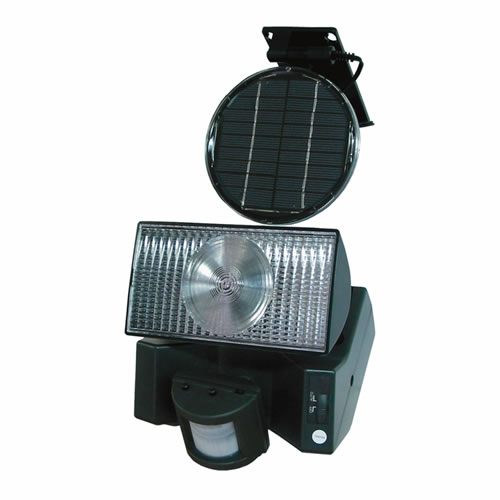

Using free energy from the sun to produce electricity is one of the most effective ways to reduce our dependence on fossil fuels, and installing small-scale solar applications is a great place to start. Manufacturers now offer solar motion-sensing lights that are both affordable (about $100) and easy to install. Now you can add a light wherever you need it, without the hassle of adding electrical wiring.
We tested several solar-powered motion-sensor lights and chose to list only those products that meet the following criteria: A detachable cord that allows you to install the solar panel 12 feet or more away from the light (in order to take advantage of the sunniest spot); ability to detect motion at least 40 feet away; and a brightness of at least 20 watts.
Brookstone
$100; 100-percent product guarantee
Heath Zenith
$90; 5-year warranty
Available at hardware stores.
Improvements
$130; 100-percent product guarantee
Sundance Solar
$130; 6-month warranty
Sun-Mate Corporation
$100; 30-day warranty
|
 SUNDANCE SOLAR Solar-powered motion-sensor lights such as this one from Sundance Solar let you add light wherever you need it without the hassle of electrical wiring. |
|
|